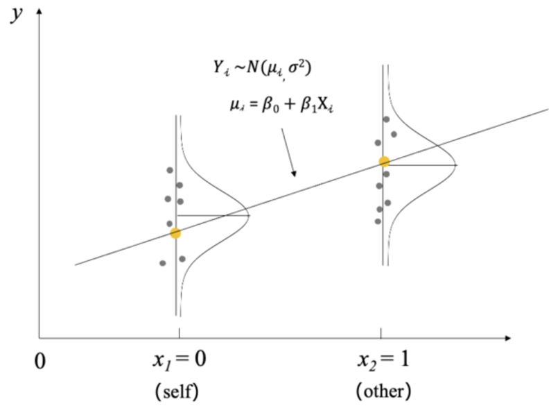
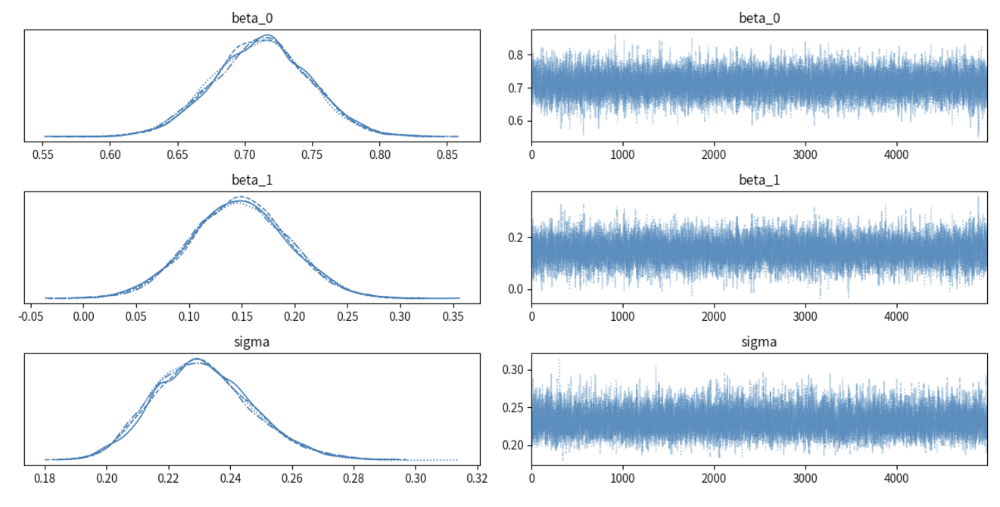
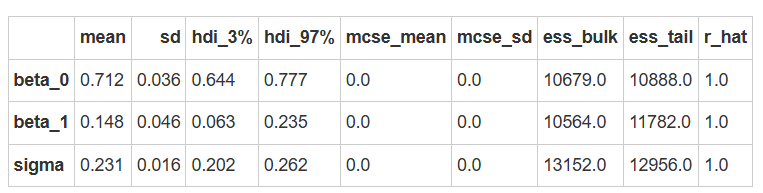
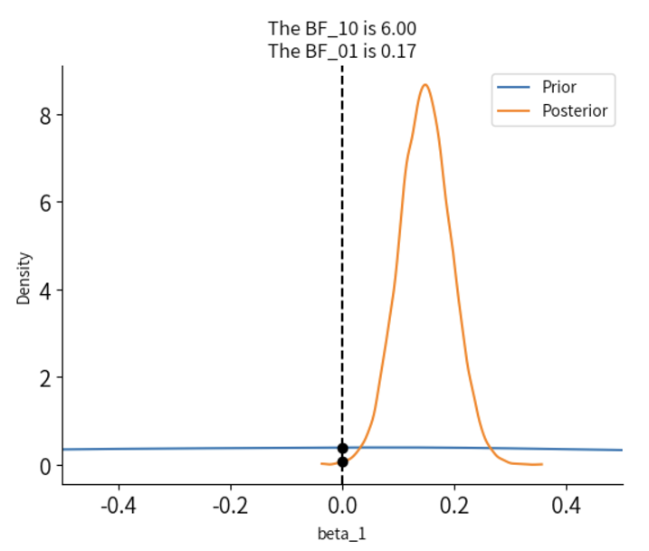
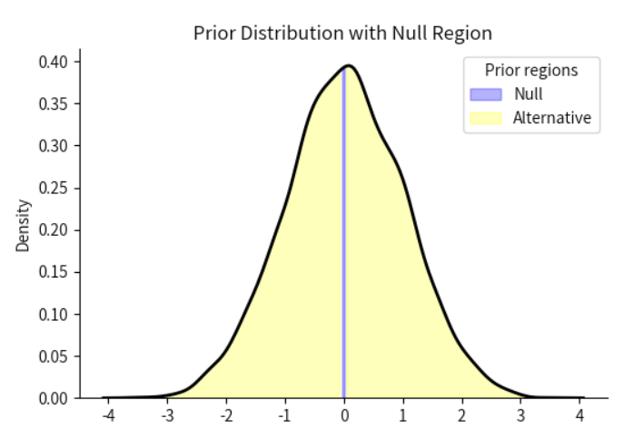
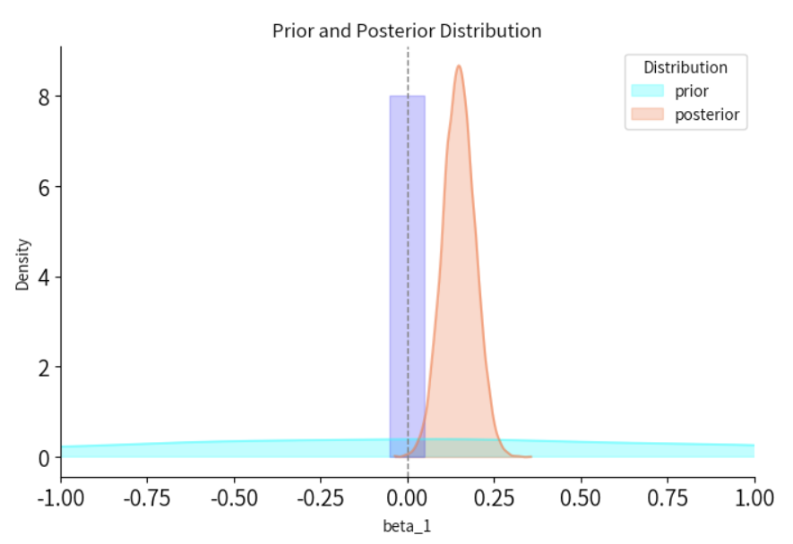

贝叶斯因子的计算与应用#
之前我们已经向大家介绍了 HDI + ROPE (最高密度区间 + 预设效应范围)方法，那么，这节课我们会主要基于贝叶斯因子来进行模型推断的讲解。
简单线性回归模型的假设检验#
贝叶斯回归与传统回归模型类似，但它通过先验分布、似然函数和后验分布来进行推断。
我们依旧沿用之前自我匹配范式的例子，以探究两种条件（self与other）下的反应时差异。
这里的\(X_i\)有两个取值，分别是0和1，指代self和other两个水平。此外，这里还有3个参数，\(\beta_0，\beta_1和\sigma\)。

这里涉及从t检验到用简单回归模型做t检验的一个过渡
假设检验：
零假设（\(H_0\)）:\(\beta_1=0\)
备择假设（\(H_1\)）:\(\beta_1≠0\)
假设检验 vs. 贝叶斯因子#
在传统假设检验中，我们会计算出一个P值，如果P值小于等于设定的显著性水平（例如 0.
与传统的假设检验方法不同，贝叶斯统计使用 贝叶斯因子（Bayes Factor，BF） 来衡量不同模型之间的相对证据强度。
贝叶斯因子不是基于p值，而是通过比较模型间的后验概率来得出结论。
💡注意：在本课中我们关注的是两个条件之间的差异，因此我们仅重点关注\(\beta_1\)，因为它反映了self和other条件之间的反应时间差异。
🤔具体而言，”贝叶斯因子能用来回答什么问题呢？”
贝叶斯因子非常灵活，因为它不仅可以用于简单的假设检验，还可以用于比较复杂模型、评估模型拟合优度、以及在多模型比较中提供更丰富的信息。
以下是贝叶斯因子常见的三种应用及可能的假设示例：
对于自变量 （Label） 因变量（RT_sec） 的关系：
我们的主观猜想是：在self条件下时的反应时间比在other条件下更短。
在第八节课中，我们的先验设定也反映了我们的主观信念，但是支持我们假设的证据是什么，如何证明？
如何检验\(\beta_1=0\)（零假设）与\(\beta_1≠0\)（备择假设）之间的关系？
我们可以使用贝叶斯因子来比较这两个模型，计算贝叶斯因子\(BF_{10}\),来量化零假设和备择假设之间的证据差异。
几种可能去检验研究假设的做法：
1、Testing against the point-null
贝叶斯因子可以用来检验某个参数是否等于零，即检验点的零假设。
2、Testing against a null-region
有时，我们可能会设定一个“零区域”，即一个参数值的范围，该范围内的值被认为与零没有显著差异。假设我们设定一个区间\(\beta_1 \in [-0.05,0.05]\)，认为\(\beta_1\)落在这个区间内是可以接受的无效效应。也就是说，我们可以设置一个0值附近的区间，当\(\beta_1\)落在这个区间之外，我们才认为差异是有意义的。
3、Directional hypotheses
贝叶斯因子也可以用于检验某个参数是否有特定的方向性，即是否存在正向或负向的影响。例如，我们可以提出假设\(H_1:\beta_1>0\)，认为自变量（Label）对因变量（RT_sec）有正向影响。贝叶斯因子将帮助我们评估数据是否支持这种方向性的假设，而不仅仅是支持或拒绝零假设。
👏 接下来，我们会通过示例向大家介绍这三种方法。
Testing Models’ Parameters with Bayes Factor#
Testing against the point-null
我们可以首先从最简单的假设开始，即假设没有效应，self和other条件下的反应时间相同，即探究 \(\beta_1\) 是否等于零🤔
当我们检验参数是否等于零时（如检验参数 \(\beta_1 = 0\)），这就是点零假设的检验。
贝叶斯因子可以帮助我们衡量数据对点零假设与非零假设的支持程度。在回归模型中，我们可以设定一个零假设 \(H_0: \beta_1 = 0\) 和备择假设 \(H_1: \beta_1 \neq 0\)，然后使用贝叶斯因子来计算零假设和备择假设的相对证据。
我们还是以编号为”201”的被试数据为例进行演示：
# 导入 pymc 模型包，和 arviz 等分析工具
import pymc as pm
import arviz as az
import scipy.stats as st
import numpy as np
import matplotlib.pyplot as plt
import xarray as xr
import pandas as pd
# 忽略不必要的警告
import warnings
warnings.filterwarnings("ignore")
# 通过 pd.read_csv 加载数据 Kolvoort_2020_HBM_Exp1_Clean.csv
try:
df_raw = pd.read_csv('/home/mw/input/bayes3797/Kolvoort_2020_HBM_Exp1_Clean.csv')
except:
df_raw = pd.read_csv('/home/jovyan/data/Kolvoort_2020_HBM_Exp1_Clean.csv')
# 筛选出被试"201"，匹配类型为"Matching"的数据
df_raw["Subject"] = df_raw["Subject"].astype(str)
df = df_raw[(df_raw["Subject"] == "201") & (df_raw["Matching"] == "Matching")]
# 选择需要的两列
df = df[["Label", "RT_sec"]]
# 重新编码标签（Label）
df["Label"] = df["Label"].map({1: 0, 2: 1, 3: 1})
# #设置索引
df["index"] = range(len(df))
df = df.set_index("index")
# #保存数据
# df.to_csv('/home/jovyan/data/Kolvoort_2020_HBM_Exp1_Clean_201.csv', index=False)
# 显示部分数据
df.head()
根据我们的模型：
先验（prior）：
\(\beta_{0} \sim N\left(5, 2^2 \right)\)
模型的截距项服从均值为 5，标准差为 2 的正态分布。
\(\beta_1 \sim N\left(0, 1^2 \right)\)
模型的斜率项，服从均值为 0，标准差为 1 的正态分布。
\(\sigma \sim \text{Exp}(0.3)\)
代表误差项的标准差，服从参数为 0.3 的指数分布。
似然（likelihood）
\(\mu_i = \beta_0 + \beta_1X_i\)
\(Y_i {\sim} N\left(\mu_i, \sigma^2\right)\)
模型定义：
# 设置随机种子以确保结果可复现
np.random.seed(123)
with pm.Model() as linear_model:
# 定义先验分布参数
beta_0 = pm.Normal("beta_0", mu=5, sigma=2)
beta_1 = pm.Normal("beta_1", mu=0, sigma=1)
sigma = pm.Exponential("sigma", 3)
# 定义自变量 x
x = pm.MutableData("x", df['Label'])
# 定义 mu，将自变量与先验结合
mu = beta_0 + beta_1 * x
# 定义似然：预测值y符合N(mu, sigma)分布
likelihood = pm.Normal("y_est", mu=mu, sigma=sigma, observed=df['RT_sec'])
后验采样：
with linear_model:
trace = pm.sample(draws=5000, # 使用mcmc方法进行采样，draws为采样次数
tune=1000, # tune为调整采样策略的次数，可以决定这些结果是否要被保留
chains=4, # 链数
discard_tuned_samples=True, # tune的结果将在采样结束后被丢弃
random_seed=84735)
trace.posterior['beta_1']
MCMC诊断
axes = az.plot_trace(trace)
plt.tight_layout()
plt.show()

az.summary(trace)

Arviz 实现计算贝叶斯因子
现在，我们有了\(\beta_1\)的先验分布和后验分布，我们分别计算贝叶斯因子\(BF_{10}和BF_{01}\),分别表示数据支持备择假设和零假设的证据强度。
在 Python 的 Arviz 库中，arviz.plot_bf 函数提供了直接计算贝叶斯因子的方法，并且可以对先验和后验分布在零假设点处的概率密度值进行可视化。
import seaborn as sns
# 进行贝叶斯因子计算，需要采样先验分布
with linear_model:
trace.extend(pm.sample_prior_predictive(5000, random_seed=84735) )
# 绘制贝叶斯因子图
az.plot_bf(trace, var_name="beta_1", ref_val=0)
# 设置 x 轴的范围
plt.xlim(-0.5, 0.5)
# 去除上框线和右框线
sns.despine()

结果显示\(BF_{10}=6\)，证明更多的证据支持\(H_1\)。
大家可以看到，我们在这里实际上是针对一个特定的点，计算出先验分布似然值和后验分布似然值之间的一个比值。
这是一种已被证实的计算贝叶斯因子的简化方法。我们设定的\(H_0假设\)为\(\beta_1=0\)，因此此处设定
ref_val=0，然后分别计算出先验在0值处的似然和后验在0值处的似然，最后进行比值得出\(BF_{01}\)。需要注意：每次mcmc后得出的贝叶斯因子的具体值可能会不同，这是正常的现象。
通过上图我们发现：
\(BF_{10}=6\)：表示数据支持\(H_1\)的强度相对于\(H_0\)为6。
\(BF_{01}=0.17\)：表示数据支持\(H_0\)的强度相对于\(H_1\)为0.17。
总结：通过贝叶斯因子的计算，对于数据倾向于支持\(\beta_1≠0\)，即数据为存在效应的假设提供了中等强度的证据。
补充内容 ：与 JASP 的对比 在 Python 中，我们利用 Arviz 来计算贝叶斯因子，通过直接比较先验和后验分布在零点的密度差异来检验某个效应是否为零。
然而，JASP（Jeffreys’s Amazing Statistics Program）提供了一种不同的方法来计算贝叶斯因子：
JASP 是一个基于 R 语言的开源软件，以其易用性和友好的图形界面广受欢迎，主要用于心理学、社会学等领域的统计分析。
JASP 使用贝叶斯模型来计算贝叶斯因子，包括模型比较和桥采样法（Bridge Sampling）等技术，能够通过计算后验和先验分布的比值，评估不同模型或假设的相对支持程度。与 Savage-Dickey 方法不同，桥采样不局限于单参数或简单假设，因此更适合模型比较和复杂假设检验。
Python 版本的 JASP 实现
在 Python 中，虽然没有官方的 JASP API，但我们可以使用 arviz.compare 实现类似 JASP 中模型比较的方法来计算贝叶斯因子。
需要注意的是，要计算贝叶斯因子，需要获得模型的边际似然（Marginal Likelihood），即模型中所有参数的联合似然。
PyMC 提供了 pm.compute_log_likelihood 方法，可以计算模型中所有参数的联合似然。
在arviz.compare()的输出中，没有直接提供贝叶斯因子（BF）的值。贝叶斯因子是用来比较模型的似然（或后验概率）的一种度量，可以通过权重(weight) 来间接理解模型的相对优劣，但它不是直接的贝叶斯因子。
注意：由于这里的方法基于模型比较，它更适合模型比较和复杂假设检验，因此和 Savage-Dickey 方法不同。
但可以看到两者结果的结论基本是一致的：\(BF_{10}(SD方法)=5.16\)；\(BF_{10}(模型比较)=10.10\)
注意：在JASP的实际运算中，软件会自动调整先验，因此与我们设置的先验不同，计算得到的贝叶斯因子也会有所不同。
# 定义零假设模型（仅包含截距的模型）
with pm.Model() as model_H0:
beta_0 = pm.Normal("beta_0", mu=5, sigma=2)
sigma = pm.Exponential("sigma", 3)
mu = beta_0
likelihood = pm.Normal("y_est", mu=mu, sigma=sigma, observed=df['RT_sec'])
trace_H0 = pm.sample(draws=5000, tune=1000, chains=4,discard_tuned_samples=True, random_seed=84735)
pm.compute_log_likelihood(trace_H0)
# 定义备择假设模型（包含截距和斜率的模型）
with pm.Model() as model_H1:
beta_0 = pm.Normal("beta_0", mu=5, sigma=2)
beta_1 = pm.Normal("beta_1", mu=0, sigma=1)
sigma = pm.Exponential("sigma", 3)
x = pm.MutableData("x", df['Label'])
mu = beta_0 + beta_1 * x
likelihood = pm.Normal("y_est", mu=mu, sigma=sigma, observed=df['RT_sec'])
trace_H1 = pm.sample(draws=5000, tune=1000, chains=4,discard_tuned_samples=True, random_seed=84735)
pm.compute_log_likelihood(trace_H1)
# 计算贝叶斯因子
model_compare = az.compare({"Label": trace_H0, "Null model": trace_H1}, method='BB-pseudo-BMA')
weight_H0 = model_compare.loc["Label", "weight"]
weight_H1 = model_compare.loc["Null model", "weight"]
BF_10 = weight_H1 / weight_H0
print(f"贝叶斯因子 (BF_10): {BF_10}")
贝叶斯因子 (BF_10): 10.494588319350406
Testing against a null-region#
现在，我们证实了\(\beta_1 \neq 0\)，即自我和他人条件对于反应时间有差异，但这个差异会不会非常小，是否在我们认为可以忽略的区间内呢？
回顾 ROPE
在之前的课程中，我们讨论过如何使用 HDI 和 ROPE 来进行假设检验。 我们假设了 \(\beta_1\) 的值在 \([-0.05, 0.05]\) 范围内可以视为实用等效区间，也就是说， 如果 \(\beta_1\) 落在这个区间内，我们可以认为 self 和 other 条件之间的反应时间差异可以忽略不计，从而在实践上认为两者无显著差异。
ROPE 对于贝叶斯因子的意义
在假设检验中，设定一个“零区域”（null region）可以帮助我们定义一个在实际意义上视为“无效”的效果范围。
通过设定零区域，我们可以计算先验概率和后验概率，进而计算贝叶斯因子来量化数据对假设的支持强度。
我们可以计算 “label” 条件下反应时间差异落在零假设区间之外的先验概率，以及落在零假设区间之内的先验概率，从而得到我们的先验概率比（prior odds）。
由于 arviz 没有提供直接计算区间假设检验的方法，因此需要我们自己实现。
根据上面公式，贝叶斯因子由两部分组成：先验概率比 + 后验概率比。
如果大家觉得pymc在心理学研究中用得较少，也可以在R中实现，利用R的一整套贝叶斯体系去进行工作。 参考资料：https://easystats.github.io/bayestestR/articles/bayes_factors.html#testing-against-a-null-region
下面我们先计算先验概率比
def calculate_odds(tace_samples, region = [-0.05, 0.05]):
# 计算区间 [-0.05, 0.05] 内的样本
in_range = tace_samples[(tace_samples >= region[0]) & (tace_samples <= region[1])]
# 计算区间外的样本
out_of_range = tace_samples[(tace_samples < region[0]) | (tace_samples > region[1])]
# 计算区间内外的比例
P_in_range = len(in_range) / len(tace_samples)
P_out_of_range = len(out_of_range) / len(tace_samples)
# 计算比率
ratio = P_out_of_range / P_in_range
return ratio
prior_samples = trace.prior['beta_1'].values.reshape(-1)
prior_odds = calculate_odds(prior_samples, region=[-0.05, 0.05])
print(f"先验概率比（prior odds）: {prior_odds:.4f}")
先验概率比（prior odds）: 24.0000
import numpy as np
import matplotlib.pyplot as plt
import seaborn as sns
def plot_region(trace_samples, region=[-0.05,0.05], dist_type="Prior", ax=None):
if ax is None:
ax = plt.gca()
kde = sns.kdeplot(trace_samples, color="black", linewidth=2, ax=ax)
# 获取核密度估计的曲线数据
x, y = kde.get_lines()[0].get_data()
# 高亮 [-0.05, 0.05] 区间的密度
ax.fill_between(
x, y,
where=(x >= region[0]) & (x <= region[1]),
color="blue",
alpha=0.3,
label="Null"
)
# 高亮区间之外（替代区域）
ax.fill_between(
x, y,
where=(x < region[0]) | (x > region[1]),
color="yellow",
alpha=0.3,
label="Alternative"
)
# 图例和标题
ax.set_title(f"{dist_type} Distribution with Null Region")
ax.set_ylabel("Density")
ax.legend(title=f"{dist_type} regions")
fig, ax = plt.subplots(figsize=(6,4))
plot_region(prior_samples,ax=ax)
sns.despine()
# 显示图形
plt.show()

这里的Null实际上就是我们设定的零区间[-0.05,0.05]，它是用紫色部分的面积来表示。因此，Prior odds实际上就是紫色部分与黄色部分面积的比值。
我们使用类似的方法计算后验概率比（Posterior Odds），评估数据更新后参数值在零假设区间内和区间外的相对支持程度。
posterior_samples = trace.posterior['beta_1'].values.reshape(-1)
posterior_odds = calculate_odds(posterior_samples, region=[-0.05, 0.05])
print(f"后验概率比（posterior odds）: {posterior_odds:.4f}")
后验概率比（posterior odds）: 57.4795
fig, ax = plt.subplots(figsize=(6,4))
plot_region(posterior_samples,dist_type="Posterior", ax=ax)
sns.despine()
# 显示图形
plt.show()

通过先前的贝叶斯因子计算公式，我们可以知道贝叶斯因子为先验概率比和后验概率比的比值：
BF_10 = (posterior_odds)/(prior_odds)
print(f"贝叶斯因子（BF 10）: {BF_10:.4f}")
贝叶斯因子（\(BF_{10}\)）: 2.3950
通过对比可以发现，当我们将\(H_0\)的零区间扩展一部分后，贝叶斯因子支持\(H_1\)的强度会有所下降。
接下来我们将可视化先验和后验分布，从而清晰地展示出数据对零假设区域内外的支持度如何发生了变化：
import numpy as np
import matplotlib.pyplot as plt
import arviz as az
import seaborn as sns
# 绘制密度图
plt.figure(figsize=(8, 5))
# 绘制先验分布的密度曲线
az.plot_kde(prior_samples, label="prior", plot_kwargs={"color": "cyan", "alpha": 0.5}, fill_kwargs={"alpha": 0.3})
# 绘制后验分布的密度曲线
az.plot_kde(posterior_samples, label="posterior", plot_kwargs={"color": "coral", "alpha": 0.6}, fill_kwargs={"alpha": 0.3})
# 添加一条垂直虚线，表示零效应参考值（0）
plt.axvline(0, color="grey", linestyle="--", linewidth=1)
# 标注零假设区域
plt.fill_betweenx([0, 8], -0.05, 0.05, color="blue", alpha=0.2)
# 设置x轴范围
plt.xlim(-1,1)
# 设置图例和标签
plt.legend(title="Distribution", loc="upper right")
plt.xlabel("beta_1")
plt.ylabel("Density")
plt.title("Prior and Posterior Distribution")
# 移除顶部和右侧边框
sns.despine()
# 显示图形
plt.show()

总结：通过可视化，可以发现先验分布的较大部分在零假设区域内，而后验分布则主要集中在零假设区域外，表明数据对备择假设提供了支持，尽管支持的力度相对有限。
同时，通过直接计算贝叶斯因子的结果也可得出：数据提供了2.3879倍的证据证明\(\beta_1\)落在[-0.05,0.05]区间外的概率更大。
因此，比值直接计算的结果和可视化的结果基本是一致的，两者都表明数据对备择假设的支持存在，但并不非常强。
接下来，可以尝试自行练习一下具有方向性的单侧检验：
练习: Directional hypotheses#
现在我们知道了数据支持在self和other条件下的反应时间有差异，而我们对于其效应的方向（正向或负向）有先验假设，即在“self”条件下的反应时间更短，
那么我们可以通过Directional hypotheses 检验效应是否朝着我们预期的方向发展，计算方向假设（“单侧”）的贝叶斯因子。
在本例中，我们希望测试的是在“self”条件下的反应时间是否比“other”条件更短，因此备择假设将限制在零假设（点或区间）的左侧区域，即更倾向负向的效果。
那么\(H_1：\beta_1<0\)表示“self”条件下反应时较短的情况
思考🤔：如何通过贝叶斯因子量化支持该假设的相对证据强度呢?
import numpy as np
import matplotlib.pyplot as plt
import arviz as az
import seaborn as sns
# 请直接运行，无需修改
# 这里由于是单侧检验，因此需要改变region的方向性
def calculate_odds(tace_samples, region = [-0.05, 0.05]):
# 计算区间 [-0.05, 0.05] 内的样本，region[0]和[1]分别代表区间的下限和上限
in_range = tace_samples[(tace_samples >= region[0]) & (tace_samples <= region[1])]
# 计算区间外的样本，即小于下限 或 大于上限
out_of_range = tace_samples[(tace_samples < region[0]) | (tace_samples > region[1])]
# 计算区间内外的比例，这里实际上是通过计算值的数量来近似面积
P_in_range = len(in_range) / len(tace_samples)
P_out_of_range = len(out_of_range) / len(tace_samples)
# 计算比率
ratio = P_out_of_range / P_in_range
return ratio
def plot_region(trace_samples, region=[-0.05,0.05], dist_type="Prior", ax=None):
if ax is None:
ax = plt.gca()
kde = sns.kdeplot(trace_samples, color="black", linewidth=2, ax=ax)
# 获取核密度估计的曲线数据
x, y = kde.get_lines()[0].get_data()
# 高亮 [-0.05, 0.05] 区间的密度
ax.fill_between(
x, y,
where=(x >= region[0]) & (x <= region[1]),
color="blue",
alpha=0.3,
label="Null"
)
# 高亮区间之外（替代区域）
ax.fill_between(
x, y,
where=(x < region[0]) | (x > region[1]),
color="yellow",
alpha=0.3,
label="Alternative"
)
# 图例和标题
ax.set_title(f"{dist_type} Distribution with Null Region")
ax.set_ylabel("Density")
ax.legend(title=f"{dist_type} regions")
#=====================================
# 基于方向的贝叶斯因子计算
# 自行练习
#=====================================
# 获取 beta_1的先验分布的采样
# beta_1_prior = ...
# 获取 beta_1的后验分布的采样
# beta_1_posterior = ...
答案：
#=====================================
# 基于方向的贝叶斯因子计算
# 自行练习
#=====================================
# 获取 beta_1的先验分布的采样
beta_1_prior = trace.prior['beta_1'].values.reshape(-1)
# 获取 beta_1的后验分布的采样
beta_1_posterior = trace.posterior['beta_1'].values.reshape(-1)
# 定义区间
from math import inf
# region = ...
# 计算先验比
# prior_odds = ...
# 计算后验比
# posterior_odds = ...
# 计算贝叶斯因子
# bayes_factor = ...
print("bayes_factor:", bayes_factor)
答案：
# 定义区间
from math import inf
region = [-inf,0] #-inf为负无穷
# 计算先验比
prior_odds = calculate_odds(beta_1_prior, region)
# 计算后验比
posterior_odds = calculate_odds(beta_1_posterior, region)
# 计算贝叶斯因子
bayes_factor = posterior_odds / prior_odds
print("bayes_factor:", bayes_factor)
# 最后检查结果，前面部分的代码运行无误后，请直接运行该代码块
# 绘制密度图
plt.figure(figsize=(8, 5))
# 绘图
az.plot_kde(beta_1_prior, label="prior", plot_kwargs={"color": "cyan", "alpha": 0.5}, fill_kwargs={"alpha": 0.3})
az.plot_kde(beta_1_posterior, label="posterior", plot_kwargs={"color": "coral", "alpha": 0.6}, fill_kwargs={"alpha": 0.3})
# 添加垂直虚线
plt.axvline(0, color="grey", linestyle="--", linewidth=1)
# 标注零假设区域
plt.fill_betweenx([0, 8], -1, 0, color="blue", alpha=0.2)
plt.xlim(-1,1)
# 设置图例和标签
plt.legend(title="Distribution", loc="upper right")
plt.xlabel("beta_1")
plt.ylabel("Density")
plt.title("Prior and Posterior Distribution")
sns.despine()
plt.show()
总结
贝叶斯因子较传统统计方法有很多优势，其中最突出的优势是对零假设和备择假设一视同仁。这一方面能够帮助研究者解决为零假设提供证据的问题，另一 方面还能帮助研究者拓宽思路，如本节课介绍了三种贝叶斯因子的计算与应用。
与传统的P值不同，贝叶斯因子不仅能够告诉我们是否拒绝零假设，还能展示数据支持哪一个假设的证据强度。
最后，请大家不要谨慎看待P值，P值并不教你相信/不相信什么，而只是为你修正自己的信念提供参考。